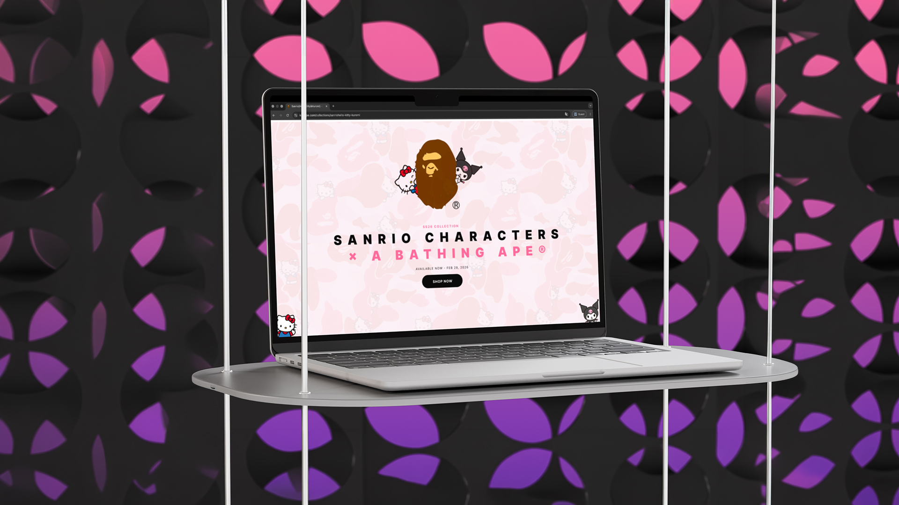
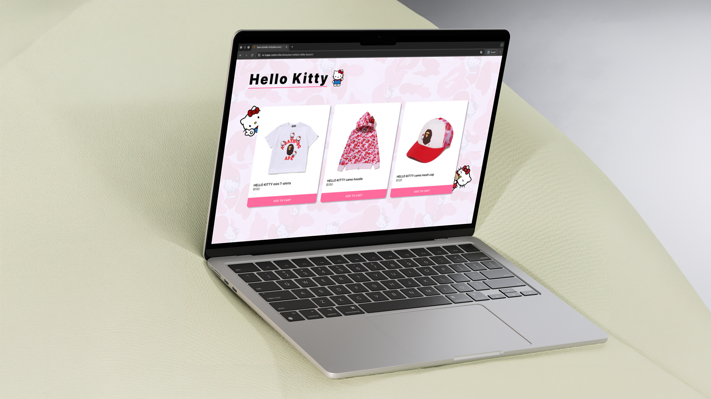
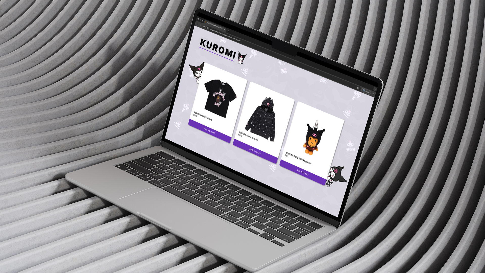
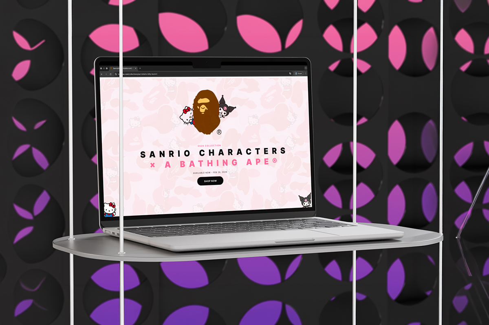
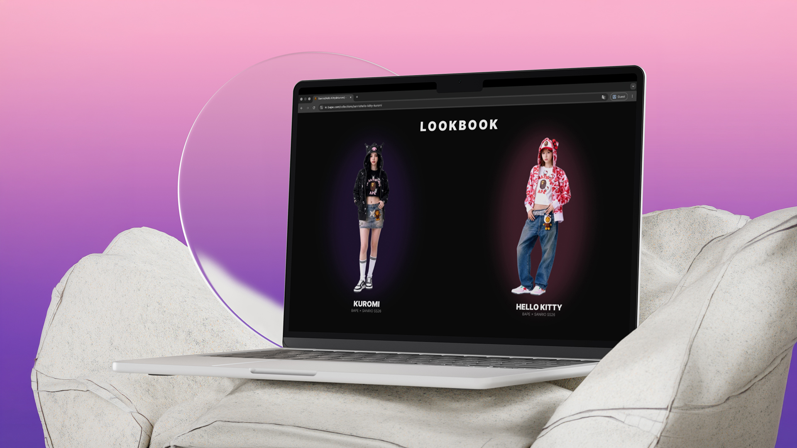

스트리트 패션 브랜드 A Bathing Ape와 SANRIO의 컬래버레이션을 가정한 웹 디자인 프로젝트입니다.
BAPE의 강렬한 스트리트 무드와 SANRIO 캐릭터의 귀여운 감성이 충돌하며 만들어내는 독특한 분위기를 웹 비주얼로 풀어냈습니다. 캐릭터별 전용 페이지 구성과 룩북 레이아웃을 중점적으로 디자인했습니다.




BAPE의 스트리트 무드와 SANRIO 캐릭터 감성 분석. 두 브랜드가 충돌하며 만드는 독특한 비주얼 방향을 정의했습니다.
Hello Kitty, Kuromi 등 캐릭터별 독립 페이지 구조 설계. 각 캐릭터의 고유한 톤으로 페이지를 구분했습니다.
컬러 시스템과 타이포그래피 구성. 스트리트와 카와이가 공존하는 긴장감 있는 비주얼 언어를 확립했습니다.
룩북 레이아웃 디테일 완성. 제품 이미지와 캐릭터 그래픽의 균형을 맞추며 전체 페이지를 마무리했습니다.